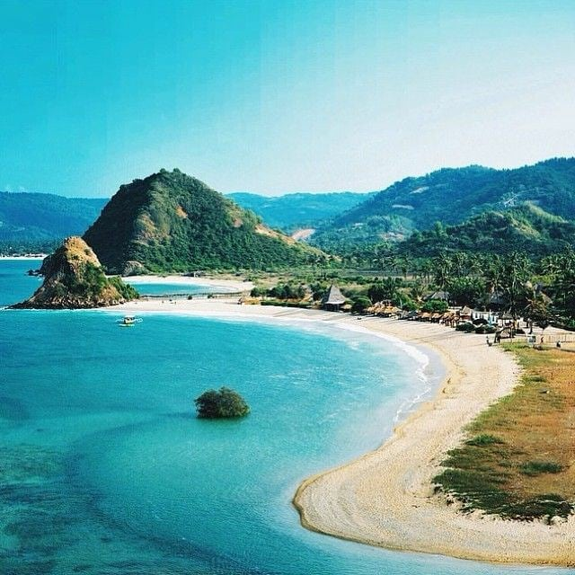
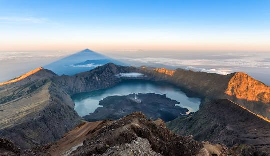

Wisata Populer di Lombok

Pantai Kuta Lombok
Pantai Kuta di Lombok adalah salah satu pantai terbaik yang menawarkan pasir putih dan ombak yang cocok untuk surfing.

Gunung Rinjani
Gunung Rinjani adalah gunung berapi aktif yang menawarkan pemandangan spektakuler dan trek hiking yang menantang.

Gili Trawangan
Gili Trawangan adalah pulau kecil yang terkenal dengan keindahan bawah lautnya, sempurna untuk snorkeling dan diving.